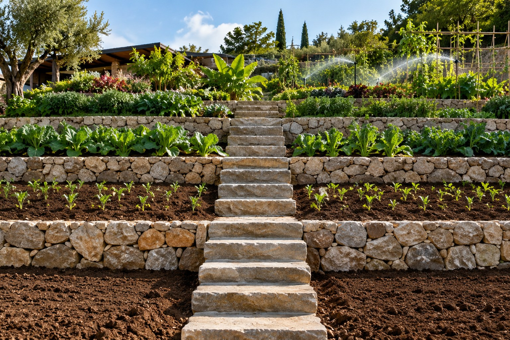

Curso · 8 aulas · pessoal, Jarvis e empresa
IA Cultivada: pare de repetir a mesma correção e faça o seu agente melhorar a cada semana
O modelo chega pronto e é o mesmo do concorrente. O que melhora é o jardim em volta dele: função, contexto, regras, exemplos, memória, avaliação e feedback. Em oito aulas você monta os cinco arquivos que cultivam, fecha o ciclo com o diário de falhas e decide a autonomia do agente por números.
- 8elementos do cultivo
- 5arquivos de texto que cultivam
- 4níveis de autonomia, subidos por evidência
- 20 minpor semana de revisão
As aulas
Conceito, os arquivos, três jardins (vida pessoal, Jarvis e empresa), o ciclo de avaliação e a autonomia por evidência. Cada aula tem prática com "pronto quando" e teste comentado.
- Aula 1 · 14 minA semente e o jardim: por que IA se cultivaNinguém escreve, linha por linha, a capacidade de um modelo de programar ou planejar. Os laboratórios criam as condições e as capacidades emergem. Você faz o mesmo em outra escala: o modelo chega pronto, e o que você cultiva é o ambiente em volta dele.
- Aula 2 · 18 minOs oito elementos e os cinco arquivos que cultivamTodo agente, seja o seu assistente pessoal ou um agente de vendas, é cultivado com os mesmos oito ingredientes. E todo cultivo cabe em cinco arquivos de texto que você copia, preenche e revisa toda semana.

Aula 3 · 15 minA escada de maturidade: o que é e o que não é IA cultivadaNem toda IA com memória é cultivada, e nem todo agente é cultivado. A maior parte do que se chama IA hoje opera nos dois primeiros degraus. A diferença entre os degraus não é o modelo: é o que existe em volta dele.- Aula 4 · 15 minPrimeiro jardim: a vida pessoalA maioria usa IA como máquina de perguntas: abre, pergunta, copia, fecha. É contratar um consultor genial e apagar a memória dele toda manhã. Na vida pessoal o cultivo é barato: três ou quatro arquivos de texto e vinte minutos por semana.
- Aula 5 · 18 minSegundo jardim: o seu JarvisJarvis é o nome popular do assistente pessoal agêntico: uma IA que age no seu ambiente, lê e escreve arquivos, mexe no calendário, roda comandos. As pessoas instalam a ferramenta e esperam que ele venha pronto. O modelo vem pronto. O Jarvis é cultivado.
- Aula 6 · 17 minFechar o ciclo: diário de falhas e observabilidadeO que não é observado não é cultivado. Esta aula acompanha um agente de atendimento de clínica do primeiro erro até a autonomia supervisionada, e mostra o mínimo que você precisa registrar para trocar "achei que melhorou" por "melhorou de 88% para 95%".
- Aula 7 · 16 minAutonomia por evidência, não por confiançaA tentação é dar autonomia cedo: as respostas parecem boas e alguém diz "deixa rodar sozinho". É promover o estagiário no segundo dia porque fez uma boa pergunta. Esta aula dá os quatro níveis, os números para subir e o caminho de volta.
- Aula 8 · 18 minTerceiro jardim: a empresa, e o seu planoNa empresa, cultivar é parar de tratar a IA como software que se programa e passar a tratá-la como capacidade que a organização desenvolve. Quando os projetos falham, o motivo raramente é o modelo: é falta de contexto, de processo e de feedback. Esta aula fecha o curso com o plano datado.
Para quem é
- 1Quem usa IA todo dia e cansou de explicar a mesma coisa toda semana.
- 2Quem montou (ou quer montar) um assistente pessoal, um Jarvis, e espera que ele melhore.
- 3Gestores que vão colocar o primeiro agente num processo da empresa.
O que você sai fazendo
- 1Descrever qualquer agente pelos oito elementos e escrever a ficha dele.
- 2Manter diário de falhas e revisão semanal: a correção vai para o arquivo, não para a conversa.
- 3Medir acerto por amostra e decidir subir ou descer a autonomia com números.
- 4Sair com um plano datado de 30 dias (pessoal) ou 90 dias (empresa).